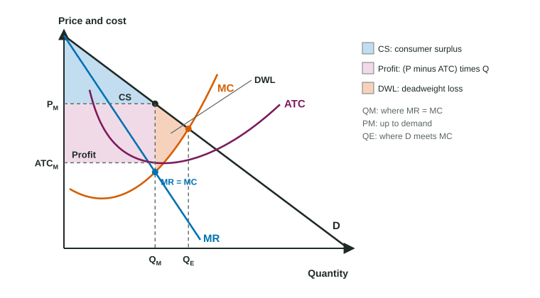
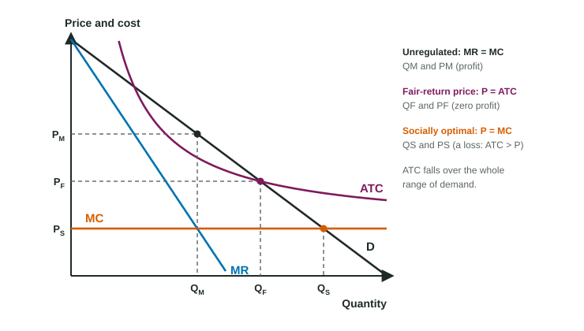

A drug company holds the patent on a new allergy test, so for years no one else may sell it. It could charge $500 and sell to a handful of buyers, or $20 and sell to everyone but barely cover its costs. A monopoly is the only seller of a good with no close substitutes, and this topic is how it picks its price, what profit it earns, and what the rest of us lose.
The monopolist's demand and marginal revenue
A monopolist faces the whole market demand curve, which slopes down. To sell one more unit it must lower its price on every unit, so its marginal revenue curve lies below demand (for a straight-line demand curve, MR falls twice as fast and hits zero at the midpoint). Its cost curves are the ones from Unit 3: U-shaped MC rising through the minimum of ATC.
Three steps: quantity, price, profit

- Quantity: produce QM where MR = MC. With a table, keep producing while MR is at least MC, and stop before the first unit whose MC is larger than its MR.
- Price: go straight up from QM to the demand curve and read PM on the price axis. The price is never read from MR or MC.
- Profit: compare PM with ATC at QM. Profit is : the rectangle from PM down to ATC, from zero to QM. If ATC at QM is above the price, the same rectangle is a loss; if ATC just touches demand there, profit is zero.
Worked example: a monopoly from a table. Tessel Games (invented) holds the license for a board game. It can sell 1, 2, 3, 4 or 5 thousand copies at $20, $18, $16, $14 or $12. Its fixed cost is $12 thousand and its marginal cost of each thousand copies is $4, $6, $8, $10 and $14 thousand.
- Marginal revenue. Total revenue is 20, 36, 48, 56 and 60 (thousand dollars), so MR is 20, 16, 12, 8 and 4.
- Quantity. MR is at least MC for the third thousand (12 against 8); for the fourth, MR is 8 and MC is 10. So Tessel makes 3 thousand copies.
- Price. From demand: $16 a copy, not the $8 where MC sits.
- Profit. Total cost is thousand, so ATC is $10 and profit is thousand dollars, the same as .
Marginal cost is the change in total cost divided by the change in output; when a table gives total cost, work out each change first.
Elasticity and revenue
Total revenue is largest where MR = 0, at the unit-elastic midpoint of a straight-line demand curve. A profit-maximizing monopolist with positive marginal cost stops before that, where MR = MC is above zero, so it always produces on the elastic part of demand. A monopolist on the inelastic part could raise its price, sell less, earn more revenue and pay less cost.
What society loses
A competitive industry with the same costs would produce where demand meets MC (P = MC, allocative efficiency). The monopolist produces less (QM) and charges more (PM above MC). Between QM and the efficient quantity, buyers value each unit more than it costs to make, but the units are not made. The lost surplus is the monopoly deadweight loss: the triangle between demand and MC from QM to the efficient quantity. Shade it between D and MC, not down to ATC.
- Consumer surplus: under demand, above PM, from zero to QM.
- Profit: part of what would have been consumer surplus becomes the monopolist's.
- Total revenue: PM times QM, the whole rectangle under PM out to QM.
Natural monopoly and regulation

Some markets have huge fixed costs (pipes, power lines, rail track) and a low cost of serving one more customer. ATC then falls over the whole range of demand, so one firm can serve the market more cheaply than two. This is a natural monopoly: the barrier is economies of scale. Regulators have two standard prices:
| Price | Where | Quantity | Economic profit |
|---|---|---|---|
| Unregulated | MR = MC, price from demand | smallest | positive |
| Fair-return price | P = ATC (demand meets ATC) | larger | zero |
| Socially optimal price | P = MC (demand meets MC) | efficient, largest | a loss: needs a subsidy |
Worked example: regulating a water company. Valley Water (invented) has fixed costs of $120,000 a month and a marginal cost of $20 per household. Unregulated, it serves 4,000 households at $60 (ATC $50, profit $40,000).
- Fair-return price. At $40 it serves 6,000 households and ATC is
dollars: price equals ATC, zero economic profit. - Socially optimal price. At $20 = MC it serves 8,000 households, ATC is $35, and it loses
dollars a month, which a subsidy would have to cover.
A price ceiling set at P = MC on an ordinary monopolist works the same way: the regulated price line becomes its marginal revenue up to demand, so the firm expands output to the efficient quantity and the deadweight loss disappears.
Taxes on a monopolist
A lump-sum tax (a license fee, the same whatever the firm produces) is a fixed cost. It raises ATC but not MC, so MR = MC at the same quantity, the price on demand is the same, and profit falls by the full tax. A per-unit tax raises MC: MC crosses MR at a smaller quantity, so output falls and the price rises.
Slip to avoid: "a lump-sum tax raises MC, so the monopolist raises its price." It changes ATC only; price and quantity stay put.